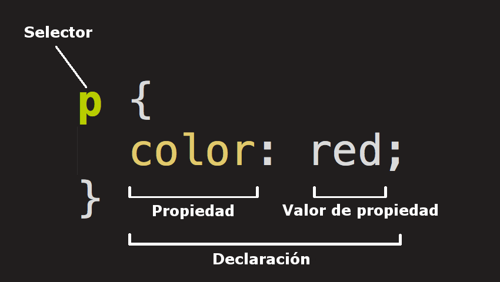

1.1- ¿Qué significa CSS?
1.2- ¿Para qué sirve el CSS? ¿Qué programa se utiliza para interpretar el CSS?
1.3- ¿A qué se llama regla de CSS?
1.4- ¿Cuál es la anatomía de la regla de CSS? Agregar imagen explicativa y utilizando una lista descriptiva explicar sus elementos.
1.5- ¿Qué es un selector en CSS?
1.6- Identificar y definir los selectores: de ID, de clases, universal, de etiquetas, descendente.
1.7- Explicar brevemente utilizando una lista ordenada: ¿cómo funciona el CSS?
1.8- ¿Cuáles son las tres formas para vincular CSS con HTML?
1.9- Ingrese al sitio CSS Zen Garden http://www.csszengarden.com y analicemos el código HTML siguiendo los siguientes pasos: Hacer clic en View All Designs Elegir dos diseños y abrirlo en pestañas distintas En el primer diseño presiona ctrl+u (esta combinación de teclas permite ver el código HTML en el navegador) En el segundo diseño presiona ctrl+u (esta combinación de teclas permite ver el código HTML en el navegador) Escribir la URL de los dos diseños seleccionados y responder: las etiquetas dentro de body ¿son iguales? ¿Qué es lo distinto? ¿Qué contribuye al cambio de diseño? Abrir los dos archivos CSS de los diseños seleccionados. ¿Son los mismos? En líneas generales, el mismo HTML ¿puede tener diferentes diseños?
2.0- Utilizaremos las siguientes propiedades de CSS. Completar la columna de valores posibles para cada propiedad.
2.1- Crea un archivo HTML con la estructura básica de una página web, agregar como título “Práctica de CSS”. Crea un encabezado de página con el mismo título, agrega un subtítulo con tu Nombre y Apellido.
2.2- Crea una hoja de estilos CSS y vincularla a tu archivo HTML: Crea un archivo nuevo en el mismo directorio que tu archivo HTML. Debe llamarse estilos.css En este punto aprenderás cómo agregar un comentario en un CSS. Dentro del archivo creado, escribe el siguiente código para la estructura básica de tu hoja de estilos CSS:
2.3- Utiliza selectores por etiquetas para aplicar estilos a las etiquetas HTML, como el tamaño de fuente, el color de fondo y el color del texto: Utiliza el selector body para aplicar estilos al cuerpo de la página, como el color de fondo y el tamaño de fuente.
2.4- En este punto aprenderás a utilizar selectores por clase para aplicar estilos a elementos específicos de la página, como los encabezados, los párrafos, las imágenes, botones, etc: Agrega una clase encabezado a tu encabezado de la página para aplicar estilos específicos a ese elemento.
2.5- Ahora aprenderás a utilizar el selectores por ID para aplicar estilos a elementos únicos de la página, como una imagen de fondo o un menú desplegable: Agrega un ID fondo a tu cuerpo de la página para aplicar un fondo específico a toda la página.
2.6- Utiliza selectores descendentes para aplicar estilos a elementos dentro de otros elementos, como un enlace dentro de un párrafo: Agrega un enlace a un párrafo en tu página.
1.1 Cascading style sheets
1.2 CSS es usado para programar el front end de na pagina incluye todo lo entetico e algunas cosas interactivas, el programa que se usa para intrpretar CSS es el navegador web
1.3 Una regla css se compone de uno o más selectores seguidos de una declaración que consta de una o más parejas de propiedad y valor
1.4

1.5 En CSS los selectores se utilizan para delimitar los elementos HTML de nuestra página web a los que queremos aplicar estilo
1.6 universal:Nos permite aplicar estilos a todos los elementos HTML de un documento y se indica
mediante el *
selector de etiquetas:Aplicamos propiedades CSS a una etiqueta. La misma se identifica sin
utilizar (>) (<).
decendente:Con este selector seleccionamos un elemento que está dentro
de otro del mismo tipo. Estos
seectores siempre están formados por dos o más selectores separados entre si. El último selector será el
elemento HTML al que se le aplicará las propiedades de CSS.
selectores de clases: Los
selectores de
clases comienzan siempre por un . (punto). Los clientes web (navegadores) identifican este punto y lo
distinguen del resto de los selectores.
selectores ID:Este tipo de selector es igual
al de clase,
aunque lo aplicaremos a un único elemento HTML de nuestra página. Esto se debe a que el atributo ID de HTML
identifica a un elemento HTML por medio de un nombre
1.7
1.8 Hay tres maneras de vincular una hoja de estilo CSS a un documento HTML:
Incluir la regla de enlace en el elemento HEAD del documento HTML.
Utilizar un atributo de estilo o (style) en el elemento HTML para especificar los estilos de esa clase o
contenedor.
Vincula tu hoja de estilos CSS utilizando @import.
1.9 estos dos tipos de codigo que estan dentro de body no son iguales ya que usan distribuciones y etiquetas distintas, al abrir los 2 archivos CSS vemos que no son iguales pues cada uno tiene sus colores, imagenes,etc. El mismo HTML puede tener distintos diseños? si pues el html no es el que controla el diseño de la pagina sino el que lo hace es CSS
2.0
| propiedad | descripcion | color |
| color | define un color | black, green, white, etc |
| background-color | define el color de fondo de un elemento | blue, red, black, etc |
| front-size | Define el tamaño de la fuente del texto. | 10em,20em,5em |
| font-weight | Define el grosor de la fuente del texto (por ejemplo, si se trata de texto en negrita o normal). | 100-900-200 |
| font-style | Define el estilo de la fuente del texto (por ejemplo, si es cursiva o normal) | cursiva, mayuscula, etc |
| font-family | Define el tipo de letra a utilizar para el texto. | sans-serif, lucida sans, etc |
| text-align | Define la alineación horizontal del texto (izquierda, centro o derecha) | center, left, right, etc |
2.2. p { background-color: #f2f2f2; font-size: 16px; } { font-size: 36px; color: #333; }